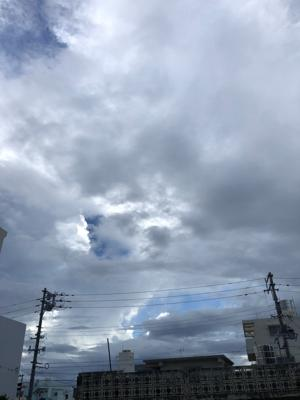
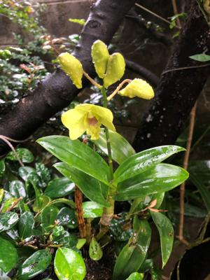

うるがいの話 ある日
最新: ＮＴＴの発行手数料【うるがいの話 ある日】とは 一日だけのプログです
『うるがいの話』の最新一日だけのプログで、通信料が少なく経済的だ。カニの画像をクリックすると全ての日付が載る『うるがいの話』サイトを表示します
|
|
【うるがいの話】 うるがい(ｳﾙｶﾞｲ urugai)とは、『もずくがに』の名前でとても大きくなります。 |
|---|---|
|
|
【カミマヤーの話】 猫のことを方言でマヤーといいます。カミマヤー（kamimayaa）とは、神の猫のことです。 |
|
【たながぁの音楽】 たながぁ（ﾀﾅｶﾞｰ tanagaa）とは手長えびのことで、何種類かあり大きいのは車 エビぐらいになります。 |

|
【ぶながぁの話】 ぶながぁ(ﾌﾞﾅｶﾞｰ bunagaa)とは、赤い髪の毛、赤い身体、そして身長は１ｍ２０ｃｍ ぐらい、川の蟹を食べているの目撃された。場所は沖縄県国頭郡大宜味村のと ある村僕の隣近所に住んでいる爺さんから、聞いた話です。 |
|
|
【ギーマの話】 ギーマ(giima)とは、山原の里山に咲くスズランに似た、 花を付けます。実は食べられます、 気が付くと口の周りが紫になっています。 |
2022年09月27日 (火）ＮＴＴの発行手数料
17:05

毎月ハガキで届くＮＴＴの口座振替のご案内にかかる発行手数料の百円を減ら
すベク、頑張っている。ひと月ほど前にネットのサイトから手続きを行おうと
したところ、上手くできずここへ電話してください案内されたので、電話する
と『お客様の場合は、サイトでの対応はできずこちらの方で対応します』、ホ
ー、『ただし、ハガキの送付停止は別の会社になります、電話番号は・・・』
と言われたところに電話した。『え！、サイトで請求内容が参照できる手続き
を済ませたのでしたら、こちらの手続きはいりません』と言われ、え！、前の
会社ではそちらで手続きするように言われたヨと、説明したが、『特に必要は
ありません』、フーン、では様子を見てみるか・・・。その直後に、ハガキが
届く、さらに、ハガキが届く。発行手数料１００円が含まれいる。カチーン！
ハガキを停止するため、電話する。すると、『この部署ではありません、別の
部署になりますので』と電話番号を案内する、オイオイ、たらい回しか、と前
回のやりとりを話す、『分かりました、こちらから後程電話します』と言われ
る。このやり取りは昼３時前から２０分、折り返しの電話はまだ、掛かって来
ない！！。

１７時００分 ビットコインの総資産 ￥８、４５６↑